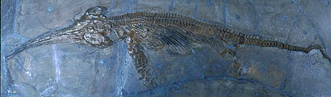
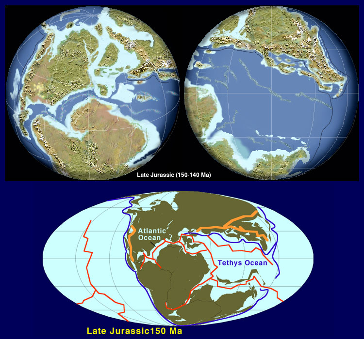

The Triassic | The Jurassic | The Cretaceous | The Great Cretaceous Mass Extinction
Learning Objectives | Terms | Review Questions | Links | References
The Mesozoic era covers the time between two great extinctions: the Permian extinction that closed the Paleozoic era, and the Cretaceous extinction that ended the reign of the dinosaurs (as well as the Mesozoic). The Mesozoic era is divided into three geologic periods, the Triassic ( 245-208 million years ago), the Jurassic (208-146 million years ago), and the Cretaceous (146-65 million years ago).
The Mesozoic was the time of the beginning of the breakup of Pangaea about 225-200 million years ago, eventually fragmenting that supercontinent into the modern continents. This breakup had profound consequences for living things, as had the earlier formation of Pangaea during the later Paleozoic. The breakup continues today!
The breakup of Pangaea. Image from http://pubs.usgs.gov/publications/text/historical.html.
Mesozoic seas saw a rise and spread of another iteration of the cephalopods, the ceratites, eventually to be replaced by the ammonites. Coral reefs, which had been decimated by the Carboniferous extinction returned to prominence with the evolution of new groups of reef-building animals and algae. Modern bony fish evolved and began to compete with the ammonites as swimming predators.
Terrestrial animals saw the rise of major groups of tetrapods: dinosaurs and mammals and the later advent of birds. Tetrapods took to new envirponments in the air as well as a secondary return to the waters. Forests took on an increasingly modern look, with the evolution of cycads and cycadeoids, conifers and ginkgoes. Flowering plants finally appeared about 140 million years ago and have risen to become the dominant floral component of many areas of the planet.
The Mesozoic ended with the great mass extinction that eliminated nearly 75% of all species, including dinosaurs, swimming and flying reptiles, and ammonites. The causes of this extinction have long been speculated on and are not presently conclusively settled.
First appearances and relative diversity (width of shaded area) for major groups of animals. Image from Purves et al., Life: The Science of Biology, 4th Edition, by Sinauer Associates (www.sinauer.com) and WH Freeman (www.whfreeman.com), used with permission.

The fossil records of some protist and plant groups. The width of the shaded space is an indicator of the number of species. Image from Purves et al., Life: The Science of Biology, 4th Edition, by Sinauer Associates (www.sinauer.com) and WH Freeman (www.whfreeman.com), used with permission.
The Triassic period lasted from 245 to 208 million years ago. Following the massive extinction at the end of the Permian, the survivors underwent adaptive radiations as they diversified and began to reoccupy many of the now-vacated environmental roles.
Dinosaurs arose in the Triassic. In this scene, Plateosaurus (larger) spies two Yaleosaurus (left) and a smaller Coelophysus behind. Cycads were a dominant vegetative type. The taller trees belong to the genus Bjuvia. Image and caption from http://seaborg.nmu.edu/earth.
Coral, decimated by Paleozoic extinctions, rebounded during the Triassic with the evolution of the scleractinian corals. Dinoflagellates made their first appearance as part of the phytoplankton. Dinoflagellates have an excellent fossil record and make useful index fossils for age dating of rocks. The oldest possible dinoflagellate was Arpylorus antiquus, from the Silurian period. Dinoflagellates become more common in Triassic and younger rocks. Modern scleractinian corals have some symbiotic dinoflagellates, known as zooxanthellae, living inside the coral. Both groups seem to appear in the fossil record at approximately the same time, suggesting the symbiosis was a valuable relationship.
Another group of phytoplankton that appeard at the end of the Triassic was the coccolithophorids, usually shortened to coccoliths. These small fragments of a much larger, yet still microscopic, creature collect calcium carbonate from the seawater and use it to build their small "skeletons". Below is an electron micrograph of a coccolith collection formed by a modern alga.
Coccosphere of a marine alga, Emiliania huxleyi. Image from http://www.chm.bris.ac.uk/inorg/mann/webpage.htm.
The cephalopods recovered from the extinction of the goniatites and developed a remarkably similar group, the ceratites. These coiled, chambered animals had slightly more complex sutures than did the goniatites.

Ceratites nodosus from the Triassic of Saverne, France. Image from http://www.toyen.uio.no/palmus/galleri/montre/english/159_155.htm.
Bivalves (specifically pelecypods) became more abundant and important parts of reefs as the Triassic progressed, and would remain important parts of the marine fauna throughout the Mesozoic.
Unlike marine animals, terrestrial plants for the most part (save the cordaites) escaped the great Permian extinction. The Triassic was a period of transition for the world's floras, as Paleozoic plants such as the calamites and lycopsids declined in favor of newer gymnosperm groups such as the "cycads". During the Triassic up to 20% of the world's flora consisted of cycads, the acme of the group that today has declined to but a few genera restricted to the tropics.
Plants possibly allied to the modern ginkgoes have been found in Permian aged sediments. These plants have been classified in the leaf-genera Ginkgoites and Baiera, although recent studies suggest these genera are really morphological variants and that the modern genus Ginkgo should be used to include these fossils. During the Mesozoic ginkgoes were worldwide in their distribution and important elements in the gymnosperm forests that dominated the land.

Ginkgoites leaf from the Triassic of North Korea. Image from http://www.dges.tohoku.ac.jp/museum/fosgal19.html.
The glossopterids persisted in Gondwana but were gradually replaced by a new flora characterized by the seed fern, Dicroidium. By the close of the Triassic the glossopterids were extinct.
Dicroidium sp. from New South Wales, Australia. Image from http://www.toyen.uio.no/palmus/galleri/montre/english/159_177.htm.
Terrestrial faunas of the early Triassic were dominated by therapsids, evolutionary offshoots of the by-then extinct "sail-backs". These therapsids divided into two groups: herbivores and carnivores. The therapsids of this time may have had some sort of "hair" as a body covering as well as some degree of endothermy. By the close of the Triassic therapsids had given rise to early mammals.
Reconstruction of Lystrosaurus, a southern hemisphere therapsid (L) and Thrinaxodon (R), a therapsid reconstructed with hair and very mammalian features. Images from http://www.ldeo.columbia.edu/dees/courses/v1001/dinoorig9.html.
Reconstructions of Lystrosaurus (top or left) and Thrinaxodon (bottom or right). Images from http://cas.bellarmine.edu/tietjen/Evolution/triassic_dinosaurs.htm.
The ancestors of modern turtles appeared during the Triassic. Whereas modern turtles have lost their teeth, these Triassic turtles retained teeth on their jaws.
Another reptile group, the euryapsids, made the transition from land to sea during the Triassic. These swimming reptiles diverged into three groups during the Triassic: the ichthyosaurs (dolphin-shaped swimming reptiles), the placodonts (bulky, paddle-limbed reptiles that went extinct by the end of the Triassic), and the nothosaurs (streamlined, long-necked swimming predators).
Display of two placodont skeletons assigned to the genus Placodus. Image from http://www.senckenberg.uni-frankfurt.de/ob/ob3.htm.
Reconstruction of the early ichthyosaur Cymbospondylus. Later ichthyosaurs became much more dolphin-like. Image from http://cas.bellarmine.edu/tietjen/Evolution/triassic_dinosaurs.htm.
Composite of an early Triassic ichthyosaur. Note the shape is not so much fish-like as lizard-like, reflecting the recent move of these creatures from land to the sea. Image from http://www.ucmp.berkeley.edu/people/motani/ichthyo/intro.html.
Skull and some of the upper body of Nothosaurus, from the Triassic of Germany. Image from http://www.toyen.uio.no/palmus/galleri/montre/english/x647.htm.
Reconstruction of Nothosaurus as it might have looked when feeding. Image from http://www.paflo.demon.nl/page35.html.
The diapsids, the "reptiles" except for turtles and a few extinct forms, rose to prominence during the latter Triassic times. Diapsids, you recall, have two openings in the skull behind the eye socket. While the diapsids had originated possibly as far back as the late Carboniferous, they did not become major elements of the fauna until the Triassic. The major group of diapsids, the archosaurs (ruling reptiles) evolved in the later part of the Permian, and underwent a major adaptive radiation in the late Triassic. Today only the birds and crocodiles remain of the once dominant ruling reptile group.
The first true crocodiles also appeared during the Triassic. Several other reptile groups, such as the Triassic phytosaurs, adapted to the environment that crocodiles lived in. Due to evolutionary convergence, these animals took on an outer semblance of crocodiles, even though there were numerous anatomical differences. The ancestral crocodiles fully occupied the phytosaur niche in the environment after the extinction of phytosaurs at the close of the Triassic.
One early archosaur was Euparkeria, a small, Triassic-aged, quadrupedal reptile that some scientists think may have been able to run short distances on its hind legs. Euparkeria specimens reach about 0.5 meters in length. The genus appears restricted to the Triassic of South Africa.
Another archosaur, at one time considered a dinosaur, was Herrerasaurus, from the Triassic of Argentina. This animal marked the transition between the archosaur stem group and the derived dinosaurs. In all but a few characteristics Herrerasaurus is a dinosaur, although a smallish one of 3-4 meters in length and a body weight estimated at around 300 kg.. Eoraptor, from the same age and area, was another archosaur with a mosaic of dinosaurian and nondinosaurian characteristics.
Reconstruction of Herrerasaurus. Image from http://www.inhandmuseum.com/Dinosauria/Herrerasauria/Herrerasaurus.html.
The Triassic saw the evolution of the first true dinosaurs, the ceratosaurians, or horned dinosaurs. These bipedal, carnivorous dinosaurs have skeletons with a number of bird-like features. Famous members of this group include Dilophosaurus and Coelophysis. Both occur in Triassic deposits in the North American Painted Desert. Coelophysis and similar dinosaurs are known from other Triassic rocks throughout Pangaea. Unlike the specimen shown in the movie Jurassic Park, Dilophosaurus did not have a wide fringe nor is ther any evidence that it spit venom. But then, you know how movies are, right? Dilophosaurus was a slender 6-7 meters long dinosaur that weighed an estimated 300-400 kg. Coelophysis was less than 3 meters long and weighed a slight 15-30 kg.
Reconstruction of Dilophosaurus. Image from http://rainbow.ldeo.columbia.edu/courses/v1001/lias12.html.
The dinosaurs have traditionally been classified into two distinct taxonomic classes, the saurischia (lizard-hipped) and ornithischia (bird-hipped). This divergence was accomplished by the close of the Triassic. The ancestors of dinosaurs were some unspecified thecodont earlier in the Triassic. The Saurischia, which includes Dilophosaurus and Coelophysis, has two main groups, the theropods and the sauropods. The theropods were bipedal carnivores that included the famous Velociraptor and Tyrannosaurus rex as well as birds. Sauropods and similar forms were quadrupedal, mostly herbovorous forms that include the giants of the Jurassic: Apatosaurus, Diplodicus, and Brachiosaurus. The recently discovered Arizona dinosaur Sonorasaurus belongs in this group as well. Ornithischians were all herbivourous, with some retaining a bipedal gait, and others returning to four legs, and included: the ornithopods (such as Trachodon and Maiasaurus), ceratopsians (such as Triceratops), and the stegosaurians (including Stegosaurus and Ankylosaurus).
Mammals also evolved during the Triassic, at about the same time as the dinosaurs. However, Triassic mammals were small and inconsequential components of the Triassic ecosystems.
Pangaea reached its greatest extent during the Triassic. The conditions from the Permian (dry continental interiors, few if any shallow marginal continental seas) continued. Around the middle of the Triassic the breakup of Pangaea began, with the supercontinent separating into two landmasses, Gondwana in the south (composed of the future continents of South America, Africa, India, Antarctica, and Australia) and Laurasia in the north (Asia and North America). The breakup of Pangaea also resulted in mountain-building along the western edges of North and South America.
Reconstruction of Triassic continents. Image from http://vishnu.glg.nau.edu/rcb/Trias.jpg.
At the end of the Triassic a minor mass extinction occurred. The cause of this is still in dispute, although the consensus opinion involves global cooling associated with an asteroid impact or comet showers. The victims of this event included the labyrinthodont amphibians, conodonts, and all marine reptiles except ichthyosaurs. Thecodonts, brachiopods, gastropods, and molluscs also suffered a loss of diversity as did the synapsids. As with larger mass extinctions, the Triassic die off opened ecological spaces into which the dinosaurs and other creatures moved during the Jurassic.
The Jurassic period spanned the time interval from 208 to 146 million years ago. The major events of the Jurassic were the explosive adaptive radiation of dinosaurs and the evolution of birds (sometimes referred to as the avian dinosaurs), the diversification of the cycads, seed ferns and the "cycadeoids", and the continued breakup of Pangaea. The opening of the Atlantic Ocean between Africa and North America created new shallow-water environments, as did the global rise of sea-levels that occurred during the Jurassic. As you might expect, marine life responded with a burst of adaptation and the appearance of new forms.
The separation of Pangaea caused the formation of new oceans, such as the Atlantic. It also led to a global rise in sea-level. Consequently there were many more environmental spaces open for exploitation. Since the Trissic extinction was not nearly as calamitous as the Permian one, life rebounded much quicker.
Dinoflagellates and coccoliths became major elements of the oceanic phytoplankton. The bivalves, specifically the rudistids, began to play a larger role in reef formation.
Two bivalves from the Jurassic of Germany. Image from http://www.toyen.uio.no/palmus/galleri/montre/english/140_346.htm.
Coral reefs expanded into these new ocean environments.

Thecosmilia sp., coral colony preserved in chalcedony, from the late Jurassic of Germany. Image from http://www.toyen.uio.no/palmus/galleri/montre/english/167_739.htm.
The cephalopods again produced a new coiled, chambered form, the ammonites. Suture patterns of these forms were even more elaborate than those found in the Triassic ceratites. The belemnites were straight-shelled cephalopods with elaborate suture patterns.
Dactyliceras commune, an ammonite from the early Jurassic of Withby, Yorkshire, England. A complete specimen is shown on the left, while a sectioned specimen is on the right. Image from http://www.toyen.uio.no/palmus/galleri/montre/english/a31188.htm.
The ichthyosaurs had been virtually unaffected by the Triassic extinction. During the Jurassic they reached their peak of diversity and prevalence ecologically. Whereas the triassic forms had resembled swimming lizards, Jurassic and later forms took on increasngly fish-like shapes.

Stenopterygius hauffianus, an ichthyosaur from the Jurassic of Holzmaden, Germany. Image from http://www.toyen.uio.no/palmus/galleri/montre/english/nn003.htm.
Stenopterygius quadriscissus was a Jurassic ichthyosaur (a reptile) which reached lenghts of 10-12 feet. Large eyes provided for keen sight. Unlike otherswimming reptiles which could come out on land to lay eggs, the ichthyosaurs gave birth to live young, eliminating the need to leave the water. Image and caption from http://seaborg.nmu.edu/earth/jurassic/jur02b.html.
In addition to ichthyosaurs, Jurassic seas also contained long-necked plesiosaurs. Plesiosaurs evolved at the end of the Triassic, most likely from nothosaurs, and diversified during the Jurassic, persisting until the terminal Cretaceous event that closed the Mesozoic era. While most of us think of plesiosaurs as having long necks, there are also short-necked forms. Unlike the ichthyosaurs, which swam in a fishlike manner, plesiosaurs swam by using their paddle-like limbs in a manner similar to that of a sea lion or seal. Plesiosaurs did not give birth to live young, but instead crawled ashore to lay eggs as turtles do.
Plesiosaurus macrocephalus was a Jurassic pleisiosaur (a swimming reptile) from England. They reached a length of about 3 meters. These animals arose at the start of the Jurassic and continued through the Cretaceous. Image and caption from http://seaborg.nmu.edu/earth/jurassic/jur03b.html.
Mary Anning, a 19th century fossil collector from England. Although she had no formal training, Mary was recognized as the premiere fossil collector of her time. Among her finds are the first well-preserved ichythosaurs and the first plesiosaurs. Image from http://rainbow.ldeo.columbia.edu/courses/v1001/lias12.html http://rainbow.ldeo.columbia.edu/courses/v1001/lias12.html
The Jurassic terrestrial environments saw an increase in gymnosperm groups such as the cycads, ginkgoes, and cycadeoids. Reptilian groups also became more adept at flying, while the dinosaurs grew in size with such giants as Apatosaurus and Brachiosaurus, and ferocious predators like Allosaurus. The first birds appeared, as did the most famous fossil bird, Archaeopteryx.
The Jurassic was a time of increasing diversity for the cycads and a similar-looking group, the cycadeoids. The cycadeoids, sometimes known as the Bennettitales, produced leaves that superficially resembled cycad leaves. However, details of the reproductive structures indicate the two were not closely related. During the Mesozic leaves of these groups were so common that paleobotanists refer to the era as the age of cycads.
The modern cycads are a pale remnant of the dominant plants of the Mesozoic, with today only 160 species in 11 genera, confined to the tropics. Cycads retain some fern-like features, notably pinnate leaves and circinate vernation. However, they (usually) produce cones of nonphotosynthetic reproductive structures. These cones are unisexual, in fact the plants are dioecious, having separate male and female plants. Based on structure of the leaf cuticle, cycads are usually separated from the cycadeoids. A number of leaf genera from the Mesozoic have been assigned to the cycads: Taeniopteris and Nilssonia.
The cycadeoids superficially resemble cycads in having recurrent leaf bases on soft-wood stems. Unlike the cycads, however, the cycadeoids have bisexual reproductive structures and structure of their stomates more like what is found in angiosperms and gnetophytes. Their reproductive structures were at one time interpreted as flowers and the cycadeoids were suggested as ancestors to the flowering plants. Cladistic analyses, such as Doyle and Donoghue (1986), suggest the cycadeoids and the flowering plants belong to the same clade, the anthophyte clade, but that cycadeoids are not the sister group for the angiosperms.
Williamsonia sewardiana, a cycadeoid. Image taken from Prehistoric Animals, J. Augusta, illust. by Z. Burian, (Paul Hamilyn, London, 1960), pl.14 by http://www.kheper.auz.com/gaia/biosphere/plants/bennettitales/Bennettitales.html.
The ginkgoes, like the cycads, originated during the late Paleozoic and diversified during the Mesozoic. Beginning during the Jurassic the number of species increased to a maximum of 11 during the Cretaceous before the decline to the single species, Ginkgo biloba, that remains today.
The Mesozoic saw the spread of true conifers, including forms similar to Metasequioia and Sequoia, as well as numerous types of pines. A wide variety of extinct gymnosperms were present, including Caytonia and Pentoxylon.
The flying reptiles of the Triassic underwent diversification during the Jurassic. The pterosaurs (literally winged-lizard) consisted of the earlier forms with long tails, like Rhamphorhynchus shown below, and the later forms that ruled the Cretaceous period, the pterodactyls. The long tailed formns died out by the close of the Jurassic. Pterosaurs had hollow bones, large brains and possibly some had endothermy.
Rhamphorhynchus. The Rhamphorhynchus group of pterosaurs had sharp teeth and most had long tails. Some species, as this one, had short, diamond-shaped "rudders" on the end of their tails. This specimen had about a 3-foot wingspread. Image from http://seaborg.nmu.edu/earth/.
Cast of a specimen of Pterodactylus sp. from Solnhofen, Germany (late Jurassic). Image from http://www.toyen.uio.no/palmus/galleri/montre/english/x649.htm.
In contrast to the Triassic dinosaurs, the Jurassic forms became even larger and more fierce. While most Triassic dinosaurs were saurischians, the ornithischians became more prominent during the Jurassic.
The small, bipedal saurischians of the Triassic continued in the Jurassic, as exemplified by Ornithomimus. This dinosaur had no teeth in its jaws, a bird-like head, and a long, ostrich-like neck, was around 3 meters long and weighed approximately 100-150 kg.
The true giants of the finosaur world were the sauropods. These quadrupedal, herbivores included Apatosaurus, Brachiosaurus, and Diplodocus. Paleontologists believe that the sauropod clade evolved from a Triassic ancestor similar to Plateosaurus. Sauropods ate numerous types of plants, often specializing in plants of a certain height. Since the teeth of sauropods are not adapted for grinding, this mechanical part of the digestive process was accomplished in their stomachs. Sauropod skeletons are often found in association with curiosuly rounded stones in the approximate position of the stomach. These "stomach stones" are known as gastroliths, and served a similar function in sauropods as bird gravel does in birds: to aid digestion of plant material not ground up enough in the mouth. Gastroliths are not unique to sauropods, as many other herbivorous dinosaurs and plesiosaurs have been found with stomach stones.
Apatosaurus, once much better known as "Brontosaurus", was a herbivore from the Jurassic deposits in the western United States that ranged from 21 to 26 meters long, and had an estimated weight of between 30 and 35 tons. For over 100 years after its discovery, Apatosaurus skeleton was fitted with the wrong head. During the 1980s the error was discovered and the correct head (which had been descxribed separately from the skeleton) wwas attached. Owing to the rules of zoological nomenclature, the recponstructed fossil would take the name of the oldest described part, in this case the head. Thus paleontology lost a truly great scientific name, Brontosaurus, which literally means "thunder lizard". The name "Brontosaurus" is invalid and the correct name is Apatosaurus.
Naming was not the only error. Apatosaurus weighed over 30 tons when alive, and early paleontologists considered the animal too heavy to have lived on land. The frequently drew Apatosaurus living in water where the water would help support the animal's weight. In modern reconstructions of the the Apatosaurus environment the vegetation is not swampy but almost desert-like, and Apatosaurus is now considered to have been a fully terrestrial animal.
Apatosaurus skeleton as seen in the Chicago Field Museum. Image from http://www.artcom.com/museums/vs/af/369.jpg.
Barchiosaurus (22 to 30 meters long; 30 to 80 tons weight) was a larger dinosaur than Apatosaurus, and for many years was considered the heaviest of the sauropods. Brachiosaurs, as shown below, were different from other sauropods in having their forelegs longer than their hind legs, as well as having their nostrils high on the forehead. The largest known doinosaur, Ultrasaurus, either belongs to the brachiosaurs or is in fact a large specimen of Brachiosaurus, according to some paleontologists.
Reconstruction of the face of Brachiosaurus. Image from http://www.facethemusic.org/fantasy/brach10.html.
The remaining saurishian dinosaurs were theropods, the bipedal carnivores exemplified by Allosaurus. Deciphering the evolutionary relationships of the theropods is difficult due to the often fragmentary nature of theropod fossils. Current thought is that there were several groups of theropods, and that one group, the carnosaurids contained the largest of the carnivores such as Allosaurus. Another theropod group was the coelurosaurids, which containd the birds and smaller carnivores such as ornithomimids, "raptors", and the tyrannosaurs.
The carnosaurs, such as the Jurassic-aged Allosaurus, had long narrow skulls, strong forelimbs, and a variety of horns or knobs projecting from the skull.
Allosaurus skeleton displayed at the Cleveland Museum of Natural History. This image is from http://www.universitycircle.org/members/cmnh2.htm.
One of the hottest topics of discussion for years was the hypothesis, proposed by Charles Darwin, that birds were descendants of dinosaurs. The shared derived characteristics of birds and dinosaurs include the structure of the hip, egg-laying, as well as a great deal of anatomical similarity. The 1861 discovery of Archaeopteryx, the "first bird" added fuel to this discussion. Archaeopteryx has a skeleton that retains a number of dinosaurian traits such as scales on the neck, teeth in the mouth, a jointed tail, and grasping fingers on the wings. It also has avian characteristics such as hollow bones and flight feathers. Many "dinosaur" specimens have, upon the discovery of feathers, been reassigned to fossil bird species. The discovery of feathers on some dinosaurs has further blurred what was once a clear-cut distinction between birds and dinosaurs. Cladistic analyses have repeatedly shown that birds and some groups of dinosaurs form a well-defined clade. Most paleontologists today feel safe in stating that birds are dinosaurs.
Archaeopteryx, once considered the first bird. The fossil is from the Solnhoefen Limestone (Jurassic) of Germany. Image is from http://www.ucmp.berkeley.edu/diapsids/birds/.
Reconstruction of Archaeopteryx. Image from http://www.dinosauria.com/gallery/joe/archaeopteryx.jpg.
There have been other fossils interpreted as birds, specifically Protoavis from the Triassic of Texas and Confuscornis from the Jurassic of China. While some paleontologists accept Protoavis as representing a bird that is closer to modern birds than is Archaeopteryx, there is an equally large camp who consider Protoavis as an early dinosaur that had evolved several bird-like adaptations by convergent evolution.

Confuciusornis sanctus, the oldest bird with a beak, from Liaoning Province, China. This species retained some of the primitive features seen in Archaeoptyeryx, such as free claws on the wing, along with more advanced features such as the lack of teeth in the bill. Image from http://www.toyen.uio.no/palmus/galleri/montre/english/161_632.htm.
The consensus view is that the coelurosaurs are the dinosaurian group from which the "avian dinosaurs" evolved. Members of this group include the small predatory dinosaurs such as Compsognathus (again a star of the Jurassic Park movies), and Velociraptor.
The ornithischian dinosaurs became more significant elements of the dinosaurian faunas during the Jurassic, and especially so during the Cretaceous period. The ornoithischians are the so-called bird-hipped dinosaurs. However, the resemblance of hip structure between birds and this group is no longer considered evidence for the rise of birds from ornithischians, but as a result of convergent evolution.
A major group of ornithischians during the Jurassic was the stegosaourids, exemplified by the genus Stegosaurus, the state dinosaur of Colorado. These quadrupedal animals sported spiked tails and large flat armor plates arrayed along the spine. These plates functioned for regulation of body heat. Stegosaurus was about 9 meters long and weighed about 2 tons. Even among dinosaurs it is noteworthy for its incredibly small brain.
Stegosaurus in foreground under a gymnosperm tree and a tree fern, with a flying reptile in the background. Image from http://www.elykish.com/Gallery/Dinosaurs/overview.htm, used with permission of Ely Kish.
The ankylosaurs were the armored ornithischians. They appeared in Europe during the late Jurassic and became more abundant during the Cretaceous. Ankylosaurs bore armor and spikes on their backs and may have defended themselves by using their tails (which often had armor balls at the tips) and by their dense back armor.
Another group of ornithischians was the ornithopods. Among the earliest ornithopods was Camptosaurus, a 17 foot long Jurassic dinosaur from Europe and North America. Camptosaurus reached Australia by the early Cretaceous. During the Cretaceous the ornithopods became much more diverse.
The major geological events of the Jurassic involved the continued separation of the former parts of Pangaea. During this period the northern Atlantic continued to open, with a small connection remaining between North America and Europe. In the southern hemisphere the former parts of Gondwana completely separated, with Antarctica and Australia being the last of the modern southern continents to form. Great seaways flooded most of the continents, possibly caused by the increased rates of sea-floor formation at the newly forming mid-Atlantic ridge. Active tectonic plate margins along the then-western coasts of the Americas began or continued the mountain-building that would become the Rocky Mountains in North America and the Andes Mountains in South America.

Reconstruction of the continents during the late Jurassic. Image from http://vishnu.glg.nau.edu/rcb/Late_Jur.jpg.
The Jurassic saw two minor mass extinctions. The first of these occurred about one-third of the way through the period, during the early Jurassic. This first Jurassic extinction affected approximately 80% of the bivalves as well as other shallow water organisms. At the close of the Jurassic, about 140 million years ago, a second minor mass extinction happened, affecting mostly the ammonoids, marine reptiles, bivalves and certain dinosaur groups such as the stegosaurs and the giant sauropods. Only one stegosaur escaped this extinction, Dravidosaurus, a small stegosaurid restricted to the Cretaceous of India (which was an island at that time). The causes of both of these extinctions are not clear.
The Cretaceous period, spanning the time interval from 144 to 65 million years ago, saw the final phases of the opening of the Atlantic Ocean, as well as the northward migration of India toward its collision with Asia during the Tertiary period of the Cenozoic era. The last of the major forms of plant life, the angiosperms, appeared near the beginning of the period. Dinosaurs continued their diversification, with the increasing dominance of the herbivorous ornithischians. The Cretaceous ended with the famous mass extinction that resulted in the extinction of the non-avian dinosaurs, the swimming reptiles, pterosaurs, ammonites and other creatures, nearly three-fourths of all life on Earth in fact.
The bivalves recovered from the Jurassic extinctions and again became major reef-formers in the numerous shallow marginal seas that encroached onto the continents during the Cretaceous.
Reconstruction of a Cretaceous seafloor. Note the large ammonite on the right, the belemnites in the center, and the gastropods and bivalves on the seafloor. Image from http://seaborg.nmu.edu/earth/cret/cre01b.html.
Exogyra sp., a bivalve from the del Rio Formation in Texas. In this view we see the top of one of the shells. The lower shell was usually quite different in shape. Image from http://www.vvm.com/~jevans/dr01.html.
Ammonites continued their dominance, as did their relatives the straight-shelled belemnites. Modern teleost fish appeared during the Cretaceous and may have competed for the same prey as the ammonites. The teleost fish were apparently stronger and swifter swimmers than the fish of the Jurassic. Some paleontologists speculate that the extinction of ichthyosaurs during the Cretaceous may have been hastened by the rise of these new faster fish that would have been difficult for the ichthyosaurs to catch and eat.

Eubranoceras sp. from the Cretaceous of Huanzala, Peru. The specimen is 2.5 inches across. Image from http://www.fossilsforsale.com/photos/xiaoc05c.jpg.
Baculites, a genus of straight-shelled cephalopods, was particularly abundant in the Cretaceous seas. Note the elaborate suture patterns in the fossil specimen below.

Left image Baculites was a straight-shelled cephalopod, about two feet in length, that presumably scavenged the bottom in search of food. Here, a small cephalopod becomes dinner (image from http://seaborg.nmu.edu/earth/cret/cre05b.html). Right image, Baculites. Notice the extremely intricate suturing between septa. (image from http://seaborg.nmu.edu/earth/cret/cre08b.html ).
The plesiosaurs from the Jurassic continued their diversification. Ichthyosaurs, however, declined during the early Cretaceous before becoming extinct well before the end-of-the-Cretaceous extinction. Both the long-necked plesiosaurs, and the short-necked pliosaurs were present during the Cretaceous. Despite inevitable competition and changes in their diets as new prey evolved, plesiosaurs were doing well up until the extinction at the close of the Cretaceous.
To the list of swimming reptiles we add the mosasaurs, essentially swimming "lizards". These ferocious predators reached lengths to 30 feet (9 meters). Mosasaurs are usually considered relatives of the monitor lizards, although some recent analyses suggest a closer link to snakes is a distinct possibility. Mosasaurs were predators of the Cretaceous seas. Many ammonite fossils have been found that have tooth marks suggesting mosasaurs actively sought and ate ammonites. Some paleontologoists believe that mosasaurs became so successful because they were able to utilize the role in the marine environment that was opened once the ichthyosaurs went extinct. Mosasaurs apparently gave birth to live young and perhaps had some level of parental care for their young.
A mosasaur from the Cretaceous (approximately 78-million years old) of southern Georgia. The specimen is 26 feet long and almost completely original material. Image is from http://www2.gasou.edu/musenews/mosasaur50.gif.
Mosasaur dentition was well-adapted for catching fish, ammonites, and other free-swimming prey. The recurved teeth prevented prey from escaping once caught. Image and caption from http://seaborg.nmu.edu/earth/cret/cre23b.html.
Perhaps the greatest change in the terrestrial life of the Cretaceous was the rise and diversification of the flowering plants, the angiosperms. The angiosperms, the last of the seed plant groups to evolve, appeared over 140 million years ago during the the beginning of the Cretaceous. All members of this group produce flowers. Within the female parts of the flower angiosperms produce a diploid zygote and triploid endosperm. Fertilization is accomplished by a variety of pollinators, including wind, animals, and water. Two sperm are released into the female gametophyte: one fuses with the egg to produce the zygote, the other helps form the nutritive tissue known as endosperm. The angiosperms (angios = hidden) produce modified leaves grouped into flowers that in turn develop fruits and seeds. There are presently 235,000 known living species.
Whence came the angiosperms? This was Darwin's "abominable mystery". Clearly angiosperms are descended from some group of Mesozoic-aged gymnosperm seed plant....but which one? Click here to view an online lab exercise in phylogeny and try to figure things out!
The flowering plants most likely evolved from a Mesozoic gymnosperm group. At one time the cycadeoids were the prime candidates, although more recent studies suggest another group, the gnetophytes as the sister group to the angiosperms. Three distinctive genera comprise this group: Welwitschia, Gnetum, and Ephedra. Ephedra occurs in the western United States where it has the common name "Mormon tea". It is a natural source for the chemical ephedrine, although there is no evidence the Mormons in Utah (where the plant is extremely common) ever used it for tea, the use of stimulants being against their beliefs. Welwitschia is limited to coastal deserts in South Africa, although fossil leaf, cuticle and pollen evidence indicates plants of this type were widespread during the Mesozoic era. Welwitschia is noted for its two long, prominent leaves. Gnetum has leaves that look remarkably like those in angiosperms, as well as vessels in the xylem, generally considered an angiosperm characteristic. Gnetophytes appear in the fossil record before the angiosperms do, and share a great many derived characteristics, making them the current choice as the angiosperm sister group (or ancestral group in a noncladistic sense).
The classical view of flowering plant evolution suggests early angiosperms were evergreen trees that produced large Magnolia-like flowers. Click here to view an illustration of suggested paths of floral evolution. However, this view has recently been contradicted by the oldest fossil yet found, a 140 million year old plant found by paleobotanist David Dilcher and his associates at the Florida Museum of Natural History.
Fossil birch leaf from the Cretaceous Dakota Formation in Kansas. Image modified from the Internet.
Part and counterpart of a Cretaceous fossil angiosperm leaf. Image from http://seaborg.nmu.edu/earth/cret/cre16b.html.
The angiosperms underwent an adaptive radiation during the Cretaceous, and for the most part escaped the major extinctions at the end of the Cretaceous. One group of angiosperms that did suffer from the extinction was the unknown groups of plants that produced triprojectate pollen. My dissertation dealt with the systematics of this fossil group. The pollen is quite odd-shaped and quite striking to see.
Aquilapollenites, from the Cretaceous Judith River Group. This palynomorph occurs in sediments from 74 to 76 million years ago. This grain is about 50 mm in length. (Photo courtesy of: Dr. Dennis Braman, Royal Tyrrell Museum of Palaeontology, Drumheller, Alberta). Image from http://www.science.uwaterloo.ca/earth/geoscience/prequat.html.
Crocodiles, which had been around since the Triassic, produced a massive form, Deinosuchus, during the Cretaceous. This marine crocodile was over 20 feet long, and dwarfs the largest modern crocodile.
Comparison of the skull of Deinosuchus and a modern crocodile. Image from http://www.ucmp.berkeley.edu/diapsids/pseudosuchia/deinosuchus.jpg.
The ornithischian dinosaurs during the Cretaceous evolved into a number of interesting groups. From bipedal ornithischians during the Jurassic, like Camptosaurus, the larger and more nimble ornithopods of the Cretaceous evolved. One of the first dinosaurs to be scientifically described was Iguanodon, a bipedal herbivore thought to have moved about in herds. Iguanodon was between 6 and 10 meters long and weighed around 5 tons.
Reconstruction of Iguanodon, an early Cretaceous ornithopod dinosaur. Image from http://www.bauwesen.tu-cottbus.de/~baehr/bilder/iguanodon3.jpg.
The hadrosaurs, commonly known as the duck-billed dinosaurs, are another group of ornithopods. These animals had hundreds of teeth in a bill reminiscent of a duck's bill (although ducks lack teeth). There were two subgroups of hadrosaurs. The crested lambeosaurs, and the noncrested hadrosaurines. The latter group is exemplified by Maiasaura and Edmontosaurus. The lambeosaurs are exemplified by Parasaurolophus. Maiasaura, the "good mother lizard" has been extensively studied for its nesting and parental care.
Adult Maiasaura and two juveniles. Image from http://www.bauwesen.tu-cottbus.de/~baehr/bilder/maia6.jpg.
The skull of Saurolophus showing the crest and duckbill-like snout. Image from http://www.mathematical.com/dinosauropholus.html. Reconstruction of Saurolophus by a Cretaceous lake. Image from http://www.elykish.com/Gallery/Dinosaurs/overview.htm, used with permission of Ely Kish.
Another major group of Cretaceous ornithischians was the ankylosaurs, the armored, quadrupedal herbivores. Unlike the Jurassic stegosaurids, the armor covering on the back was more robust, as were the spikes behind the shoulders. In some ankylosaurs the tail terminated in a bony knob that might have been used to sweep the legs of predators, possibly even breaking bones.
Sauropelta, a Cretaceous ankylosaur. Image from http://www.elykish.com/Gallery/Dinosaurs/overview.htm, used with permission of Ely Kish.
The other great ornithischian group was the ceratopsians. These quadrupedal herbivores were characterized by a beak-like snout, horns above the eyes and possibly on the end of the nose, and some degree of a bony frill around the back of the skull. Triceratops is perhaps the most famous and well known of this group. Triceratops was about 8 meters long and weighed between 4 and 8 tons. Ceratopsians first evolved, possibly from an ornithopod ancestral group, at the beginning of the Cretaceous, some 140 million years ago. By the end of that geological period, ceratopsians were among the most common dinosaurs in the northern hemispjere. Triceratops in fact was one of the last of the nonavian dinosaurs.
A herd of Triceratops, with palm trees in the background and the large flying reptile Quetzlcoatulus. Image from http://www.elykish.com/Gallery/Dinosaurs/overview.htm, used with permission of Ely Kish.
Triceratops was a rhinoceros-sized herbivore with three bony facial projections and a large neck frill. Image from http://seaborg.nmu.edu/earth/cret/cre12b.html.
The saurischians of the Cretaceous included the ferocious Tyrannosaurus rex (literally "tyrant king lizard "), as well as numerous smaller predatory dinosaurs such as the "raptors" popularized by the Jurassic Park series. Spinosaurus, the voracious carnivore of Jurassic Park III was an African member of this group. In addition to the carnivores, Cretaceous sauropods existed, although diminished in size and abundance from their Jurassic forebearers.
Perhaps no other dinosaur has inspired as many plush toys, tattoos, and awe as Tyrannosaurus rex. Sporting six inch long serrated teeth T. rex was a meat-eating machine. Tyrannosaurs ranged from 10-14 meters in length and weighed in at an estimated 5-7 tons, and were restricted to North America during the latest part of the Cretaceous period. The most famous T. rex, and possibly the most complete skeleton, was dubbed Sue. This fossil was the object of protracted legal fight before being sold to a group of Chicago Field Museum supporters for a reported $7 million. Sue is now on exhibit at that museum.
Tyrannosaurus rex skull. Image from http://seaborg.nmu.edu/earth/cret/cre26b.html.
A smaller carnovore that preceeds T. rex in time is Albertosaurus. This smaller version of T. rex reached lengths of between 7 and 8.5 meters and weighed in at a mere 2 tons. It ranged North America in the time interval just prior to the rise of T. rex.
Corythosaurus, a crested hadrosaur, fleeing from a hungry Albertosaurus. Image from http://www.elykish.com/Gallery/Dinosaurs/overview.htm, used with permission of Ely Kish.
A related group of carnivorous Cretaceous dinosaurs is the dromaesaurs, considered by some recent studies to be the sister group to the birds. Dromaesaurs had been around since the Jurassic or earlier. Sometime during the Jurassic the line leading to birds diverged. The dromaesaurs had a variety of unique features, such as their slashing modified foot claw, as well as an inferred behavior of grasping with their forelimbs. This latter feature may have been important in the evolution of avian dinosaur flight. Until the Cretaceous, dromaesaurs were smallish predatory dinosaurs. Deinonychus, considered one of the most important dinosaurs ever found, was a small animal about 3-4 meters long, weighing a mere 75 kg. Utahraptor, discovered from middle Cretaceous rocks in Utah, is the largest dromaesaurid at a weight of one ton and a length of 5 to 7 meters. Velociraptor, the dromaesaurid so prominent in the Jurassic Park series, was about 2 meters long and had an estimated weight of 7 to 15 kg.
A pack of Dromaeosaurus hectoring a doomed Lambeosaurus. Image from http://www.elykish.com/Gallery/Dinosaurs/overview.htm, used with permission of Ely Kish.
The flying reptiles of the Cretaceous were the pterodactyls, short tailed descendants of the long tailed Jurassic forms. The largest of the pterodactyls was Quetzalcoatlus, named after the Aztec feathered serpent god. Quetzalcoatlus northropii had a wingspan of 11 meters and may have weighed over 200 km. Pteranodon (whose scientific name literally means "wing without tooth") was a common Cretaceous form that had a 7 meter wingspan as well as a large crest that presumably served as a navigational aid.
Two Quetzalcoatlus flying over a grouyp of ceratopsians by a Cretaceous seashore. Image from http://www.elykish.com/Gallery/Dinosaurs/overview.htm, used with permission of Ely Kish.
Skeleton of a pterodactyl. Image from http://seaborg.nmu.edu/earth/cret/cre32b.gif.
Cretaceous birds continued to expand their environmental range. Hesperornis was a flightless swimming bird that lived in the shallow seas of the Cretaceous. There were other Cretaceous birds that flew. Large, flightless birds, like the ostrich, would not appear until the Tertiary period.
Hesperornis and a nestling. Image from http://www.elykish.com/Gallery/Dinosaurs/overview.htm, used with permission of Ely Kish.
Cretaceous mammals were still quite small and minor components of the fauna. Their significance would change with the Cretaceous mass extinction, from which they would emerge as co-rulers of the land (with the avian dinosaurs).
The breakup of Pangaea continued during the Cretaceous, with the Atlantic Ocean finally opening completely by the late Cretaceous. The westward movement of North and South America led to massive mountain building episodes that produced parts of the Rocky Mountains in the north and the Andes Mountains in the south. During much of the Cretaceous, North America was split into two separate land areas by the north-south tending seaway. This led to the development of two distinct paleofloristic regions: the Aquilapollenites province in the west and the normapolles province in the east. The Aquilapollenites province extended northward through Alaska and Siberia and then southward into eastern Asia. The normapolles province passed through Greenland and into northern Europe. With the drop in sea-levels at the end of the Cretaceous plants and animals were able to migrate between these (and other) regions. India, which had separated from the rest of the former Gondwana earlier, remained an island throughout the Cretaceous and into the Tertiary period.
The Cretaceous seems to have been a time period during which the climates were quite equitable. There is no evidence of glaciation during this time. Palm trees in fact have been found in Cretaceous sediments as far north as Alaska, and numerous plants with tropical affinities today were common throughout the Aquilapollenites province. Near the end of the Cretaceous a slight global cooling began.
Reconstruction of the continents during the late Cretaceous. Image from http://vishnu.glg.nau.edu/rcb/Late_Cret.jpg.
The sudden disappearance of the dinosaurs has long been known to paleontologists. Numerous attempts have been made to explain this, with two major ideas having the largest amounts of evidence. Sixty-five million years ago nearly 75-80% of all species of life on Earth were wiped out in an incredibly short period of time. In addition to dinosaurs, pterosaurs, belemnoids, many species of plants (such as the plant that produced Aquilapollenites type pollen), ammonites, marine reptiles, and rudist bivalves also disappeared.

The major mass extinctions of the Phanerozoic. Image from http://www.carleton.ca/~tpatters/teaching/intro/extinction/extinction1.html.
Among the various hypotheses to explain the extinction that closed the Mesozoic era were allergies by dinosaurs to pollen produced by flowering plants, increased radiation levels that led to male dinosaur sterility, diseases brought by migrating animals, and a gradual climate deterioration that the dinosaurs were unable to cope with. The first hypothesis ignores the fact that flowering plants and dinosaurs had coexisted for over 70 million years at the time of the mass extinction. Increased radiation levels would not cause the extinction of many of the plant species, nor do we know if male dinosaurs carried their gonads outside their bodies. The migration hypothesis does have some merit. We know, for example, that introduction of a new animal group to an area will cause ecologoical realignments, as well as ossibly bring disease to an area. Sheep in Iceland, for example, were severely affected by a virus brought along with new sheep from Europe. The icelandic sheep had no resistance to this virus (although the european newcomers did). The suggestion that dinosaurs went extinct because they were unable to cope with a cooling had merit when we viewed all dinosaurs as little more than large ectothermic lizards. The modern view of dinosaurs suggests they were quite well adapted to their environments, and although the diversity of dinosaurs shows a drop approaching the end of the Cretaceous, that those dinosaurs that existed, such as Tyrannosaurus rex and Triceratops, were well suited to their environments.
In 1980, physics Nobel laureate Luis Alvarez (1911 - 1988) with his son, Berkeley geology professorWalter Alvarez (born in 1940), and their coworkers proposed a wild idea: an asteroid had hit the earth 65 million years ago and triggered a series oif events that culminated in the mass extinction that ended the age of dinosaurs. Their discovery of unusually high levels of the rare metal iridium at the boundary layer between the Cretaceous and the Tertiary periods led to a conclusion that the extinction was caused by a 10 km asteroid. Iridium is a rare metal at the Earth's surface, but is known to occur at impact sites, and is also thought to occur deep within the Earth. The major flaw in the hypothesis at that time was the lack of a suitably large impact structure of the correct age. In 1991 a team of other scientists found evidence of just such a crater buried off the coast of the villiage of Chicxulub in Yucatan, Mexico. Consequences of the impact were profound. The immense amounts of material ejected from the crater into the atmosphere blocked or reduced sunlight levels, effectively shutting down the process of photosynthesis that is the basis of all food webs. The vaporization of rocks at impact contributed sulfur and nitric acids, which had a severe acid rain effect of vegetation and marine environments. Shocked quartz grains, usually considered diagnostic of an impact site (or a nuclear test site), have been found associated with these deposits.
Luis (left) and his son Walter (right) Alvarez. Image from http://cgi.pbs.org/wgbh/aso/databank/entries/boalva.html.
Remote sensing of the structure buried offshore near Chicxulub in Yucatan, Mexico. The raised central portion is consistent with the hypothesis of a large impact structure. Image from http://blueox.uoregon.edu/~jimbrau/astr123/Notes/ch29/Chicxulb.jpg.
Shocked quartz grain, as viewed under a microscope. Image from http://rainbow.ldeo.columbia.edu/courses/v1001/dinos.2001.html.
The competing hypothesis is that intense flood volcanism in India greatly altered the clomate in a very brief time and led to the mass extinction. The Indian deposits are known as the Deccan Traps. Geochemical age dating of the basalts that comprise the Traps support the major eruptive phase of the Traps at the same time the Cretaceous mass extinction occurred. While volcanic eruptions, such as those at Hawaii, do bring iridium to the surface, they do not produce shocked quartz.

One way to represent geological time. Note the break during the precambrian. If the vertical scale was truly to scale the precambrian would account for 7/8 of the graphic. This image is from http://www.clearlight.com/~mhieb/WVFossils/GeolTimeScale.html.
ammonites archosaurs belemnites cephalopods coccolithophorids conodonts diapsids dioecious euryapsids gastroliths gastropods ichthyosaurs mosasaurs molluscs nothosaurs ornithischians ornithopods pelecypods placodonts plesiosaurs pliosaurs pterodactyls pterosaurs saurischians sauropods synapsids teleost fish therapsids theropods
Doyle, J.A., and Donoghue, M.J. 1986. Seed plant phylogeny and the origin of angiosperms: An experimental cladistic approach. Botanical Review 52:321-431.
Email: mj.farabee@emcmail.maricopa.edu
Last modified:
The URL of this page is:
{kind=link}
{kind=link}
{kind=link}
{kind=link}
{kind=link}
{kind=link}
{kind=link}
{kind=link}
{kind=link}
{kind=link}
{kind=link}
{kind=link}